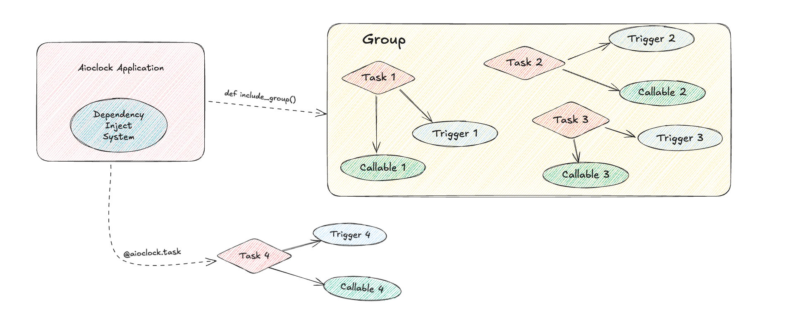
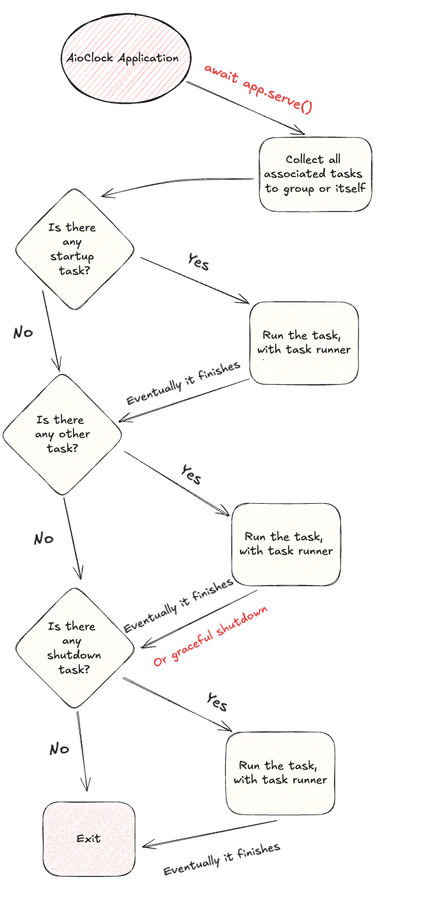
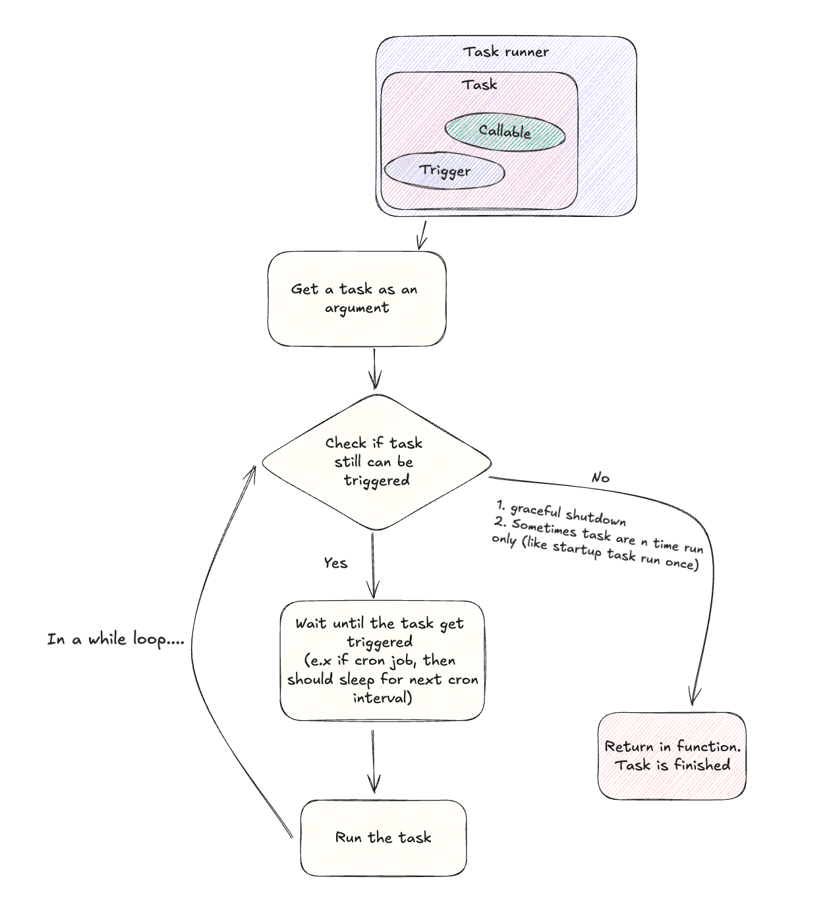

AioClock: Overview¶
Introduction¶
AioClock is a lightweight, asynchronous task scheduling framework designed for Python applications. It provides a structured approach to managing, scheduling, and executing tasks with integrated dependency injection, making it highly modular and testable.
Key Components¶
1. AioClock Application¶
The central orchestrator for all tasks. It initializes, manages, and executes tasks based on their defined triggers.
2. Dependency Injection System¶
A built-in system for injecting dependencies into tasks, enabling loose coupling and improving testability. It uses FastDepends internally, which is very fimiliar with FastAPI Dependency Injection System
3. Task¶
A unit of work that can be scheduled and executed asynchronously. Tasks are defined using specific triggers that determine their execution conditions.
4. Trigger¶
Conditions or events that initiate task execution. It includes
- Every: Repeats a task at regular intervals.
- At: Executes a task at a specified time.
- Once: Runs a task a single time.
- OnStartUp: Runs when the application starts.
- OnShutDown: Executes during application shutdown.
- Forever: Continuously runs a task in an infinite loop.
- Cron: Uses cron syntax for scheduling.
- OrTrigger: Initiate with a list of triggers, and executes when at least one of the included triggers activate.
5. Group¶
A logical collection of tasks. Groups allow related tasks to be bundled and managed together, simplifying task organization and execution. Group allow you to code with aioclock in modular way.
6. Task Runner¶
The engine that monitors and executes tasks according to their triggers, ensuring tasks run in the correct order and at the right time.
7. Serve¶
The entry point that starts the AioClock application. It initiates the task runner, which monitors and executes tasks based on their triggers.
8. Callable¶
A function or method associated with a task, executed when the task's trigger condition is met.
Diagrams¶
Ownership¶

The diagram outlines the core structure of an AioClock application. It shows how the application organizes tasks using dependency injection and logical grouping. Tasks are defined with specific triggers and callables, making them modular and easy to manage. The flow between components, like including groups or using decorators, highlights the framework's flexibility in an asynchronous environment. Overall, the architecture is designed for clarity, promoting clean, organized code while allowing for scalable task management.
Aioclock LifeCycle¶

This diagram shows the lifecycle of an AioClock application. It starts with the app.serve() call, which gathers all tasks and groups. The application then checks for startup tasks, runs them, and proceeds to other tasks. If a shutdown task is detected, it's executed before the application gracefully exits. If no shutdown tasks are present, the application simply exits. The diagram ensures a clear, step-by-step process for task management within the AioClock framework, ensuring tasks are executed in the proper order.
Task Runner Execution Flow¶

This diagram breaks down how a task is handled in the AioClock system. The task runner first receives the task, checks if it’s still valid to run, and then either waits for the appropriate trigger (like a scheduled time) or finishes if it’s no longer needed. If valid, the task is executed; otherwise, the system gracefully exits. This loop continues until all tasks are either completed or stopped, ensuring everything runs smoothly and on time.